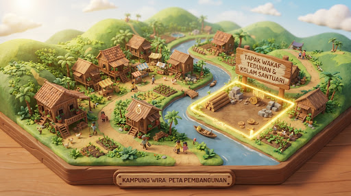

paid
1,245
Syiling Desa
+480 Baru
forest
85
Kayu Cengal
Bahan Cukup ✓
military_tech
Aras 3
Desa Harmoni
Maju Pesat
domain_add
Perluasan Desa Terbuka
Plot 5 Sedia Dibina: Zon Wakaf & Kolam Santuari! 🏡✨
Gunakan syiling dan ganjaran kejayaan daripada misi Kolam Teratai & Rumah Ilmu untuk memajukan kampung kita!

location_on
Plot 5: Terbuka!
paid
500 Syiling
architecture
Tapak Cadangan
spa
Tapak Gazebo Wakaf Teduhan & Kolam Santuari Berseri
Cadangan Projek Desa
Wakaf Teduhan & Kolam Santuari
Bangunan Nilai Murni & Rekreasi Desa
water_lux
mood
Meningkatkan Kebahagiaan Warga
+35% Keceriaan Komuniti
currency_exchange
Pendapatan Syiling Harian Desa
+80 Syiling Tabung Setiap Hari
handshake
Pusat Silaturahim & Adab Mulia
Tempat berteduh dan santapan ilmu cilik
Keperluan Pembinaan:
paid Syiling Desa
500 / 1,245 ✓ Cukup
forest Kayu Balak Tradisi
30 / 85 ✓ Cukup
bolt
Masa Pembinaan: Siap serta-merta dengan bantuan Wira!
engineering
verified
Pak Salleh Tukang Kayu
Ketua Arkitek Desa
“Wah, Wira Adam! Syiling tabung desamu sudah melimpah ruah berkat amalan ihsan dan ilmu yang dipelajari. Jom kita mulakan pembinaan Wakaf Teduhan dan Kolam Santuari di Plot 5 sekarang!”
Status Seluruh Plot Desa
5 / 6 Terbina
cottage
Plot 1: Rumah Pusaka Wira
Siap 100% 🏡
local_library
Plot 2: Pustaka Rimba Cilik
Siap 100% 📚
sailing
Plot 3: Bengkel Nelayan Tradisi
Siap 100% ⛵
palette
Plot 4: Galeri Batik Pelangi
Siap 100% 🎨
new_releases
Plot 5: Wakaf & Kolam Santuari
SEDIA DIBINA!
lock
Plot 6: Makmal Sains Rimba
Capai Aras 4 🔒